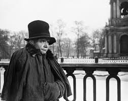

From Wikipedia, the free encyclopedia
"The Overcoat" (Russian: Шинель, translit. Shinel; sometimes translated as "The Cloak") is a short story by Ukrainian-born Russian author Nikolai Gogol, published in 1842. The story and its author have had great influence on Russian literature, as expressed in a quote about Russian realist writers from Eugène-Melchior de Vogüé (often misattributed to Fyodor Dostoyevsky): "We all come out from Gogol's 'Overcoat'." Writing in 1941, Vladimir Nabokov called it "The greatest Russian short story ever written".[1] The story has been adapted into a variety of stage and film interpretations.
The story narrates the life and death of titular councillor Akaky Akakievich Bashmachkin (Russian: Акакий Акакиевич Башмачкин), an impoverished government clerk and copyist in the Russian capital of St. Petersburg. Although Akaky is dedicated to his job, he is little recognized in his department for his hard work. Instead, the younger clerks tease him and attempt to distract him whenever they can. His threadbare overcoat is often the butt of their jokes. Akaky decides it is necessary to have the coat repaired, so he takes it to his tailor, Petrovich, who declares the coat irreparable, telling Akaky he must buy a new overcoat. The cost of a new overcoat is beyond Akaky's meager salary, so he forces himself to live within a strict budget to save sufficient money to buy the new overcoat. Meanwhile, he and Petrovich frequently meet to discuss the style of the new coat. During that time, Akaky's zeal for copying is replaced with excitement about his new overcoat, to the point that he thinks of little else. Finally, with the addition of an unexpectedly large holiday salary bonus, Akaky has saved enough money to buy a new overcoat. Akaky and Petrovich go to the shops in St. Petersburg and pick the finest materials they can afford (marten fur was too expensive, so they use cat fur for the collar). The new coat is of impressively good quality and appearance and is the talk of Akaky's office on the day he arrives wearing it. His superior decides to host a party honoring the new overcoat, at which the habitually solitary Akaky is out of place; after the party, Akaky goes home, far later than he normally would. En route home, two ruffians confront him, take his coat, kick him down, and leave him in the snow. Akaky finds no help from the authorities in recovering his lost overcoat. Finally, on the advice of another clerk in his department, he asks for help from an "important personage" (Russian: значительное лицо), a general recently promoted to his position who belittles and shouts at his subordinates to solidify his self-importance. After keeping Akaky waiting, the general demands of him exactly why he has brought so trivial a matter to him, personally, and not presented it to his secretary. Socially inept Akaky makes an unflattering remark concerning departmental secretaries, provoking so powerful a scolding from the general that he nearly faints and must be led from the general's office. Soon afterward, Akaky falls deathly ill with fever. In his last hours, he is delirious, imagining himself again sitting before the general; at first, Akaky pleads forgiveness, but as his death nears, he curses the general. Soon, a corpse, identified as Akaky's ghost, haunts areas of St. Petersburg, taking overcoats from people; the police are finding it difficult to capture him. Finally, Akaky's ghost catches up with the general—who, since Akaky's death, had begun to feel guilt over having mistreated him—and takes his overcoat, frightening him terribly; satisfied, Akaky is not seen again. The narrator ends his narration with the account of another ghost seen in another part of the city.
